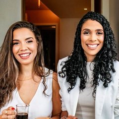

Início · Primeira consulta e como chegar
Primeira consulta: do WhatsApp à sala 502.
“Queremos que você se sinta acolhido desde o primeiro contato e tenha a tranquilidade de saber que estaremos ao seu lado em cada etapa do tratamento.” — da página da Salud na Doctoralia. Aqui estão o agendamento, a consulta e o caminho até a clínica.

Agendamento
Como agendar
Pelo WhatsApp da recepção, (71) 99957-9800. A equipe combina dia e horário. Se tiver medo de dentista, conte já no agendamento.
Passo a passo
Como é a primeira consulta
- AgendarPelo WhatsApp da recepção, (71) 99957-9800. Conte o motivo da visita — e, se tiver, o medo de dentista.
- ChegarITC, 5º andar, sala 502. A recepção do balcão iluminado e o cantinho do café ficam logo na entrada.
- ConversarNa mesa da sala, a dentista ouve o que trouxe você, a sua saúde e os tratamentos que já fez.
- ExaminarNa cadeira, o exame dos dentes e da gengiva; quando preciso, a dentista pede exames de imagem.
- Entender o planoO que foi encontrado, as opções e a ordem do tratamento. A indicação é feita na avaliação.
“A excelência começa no atendimento para marcação da consulta, passa pela recepção, as instalações, segue pela competência da dentista”Marta C., avaliação no Google · ver na ficha
Preparo
O que levar
- Documento de identidade.
- Radiografias e exames recentes, se tiver.
- A lista dos remédios que você usa.
- Informações sobre diabetes, pressão alta, problemas de coagulação, gestação ou alergias.
- As suas dúvidas, anotadas.
Os perfis das sócias na Doctoralia informam atendimento particular. Confirme as condições com a recepção.
Atendimento
Horário
Atendimento com hora marcada
Horário da ficha da Salud no Google. Atendimento com hora marcada — confirme com a recepção pelo WhatsApp.
Endereço
Como chegar
- Endereço: International Trade Center (ITC) · Rua Arthur de Azevêdo Machado, 1459 · sala 502, 5º andar · Stiep · Salvador – BA · 41770-790.
- Prédio: International Trade Center (ITC), no Stiep; a Salud fica na sala 502, no 5º andar.
- Acessibilidade: a ficha do Google informa entrada e estacionamento com acessibilidade para cadeira de rodas.
- WhatsApp: (71) 99957-9800.
“Chegar até a Salud Odontologia Especializada é simples! Gravamos esse passo a passo para você vir com tranquilidade e segurança.”
Legenda da Salud no Instagram (vídeo com o passo a passo)Dúvidas frequentes
Perguntas comuns
Atende aos sábados?
Sim, das 8h às 12h, segundo a ficha da Salud no Google. De segunda a sexta, das 8h às 18h.
A primeira consulta já inclui tratamento?
A avaliação define o que será feito e em que ordem. Confirme com a recepção como a consulta é organizada.
Qual é a sala?
Sala 502, 5º andar do International Trade Center (ITC), Rua Arthur de Azevêdo Machado, 1459, Stiep.
Agende
Comece por uma avaliação, com calma.
No ITC, sala 502, 5º andar, no Stiep. A recepção combina dia e horário pelo WhatsApp (71) 99957-9800.